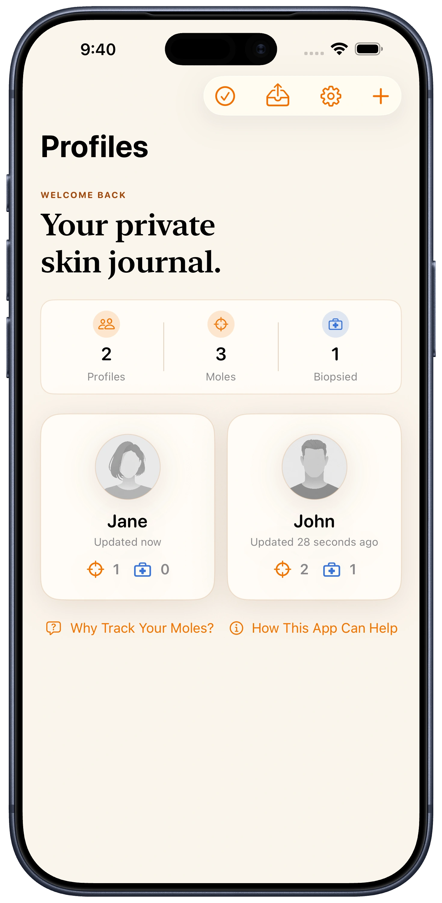
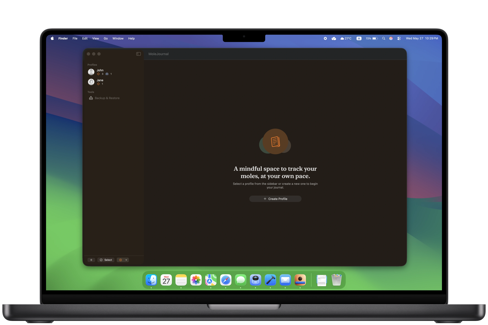
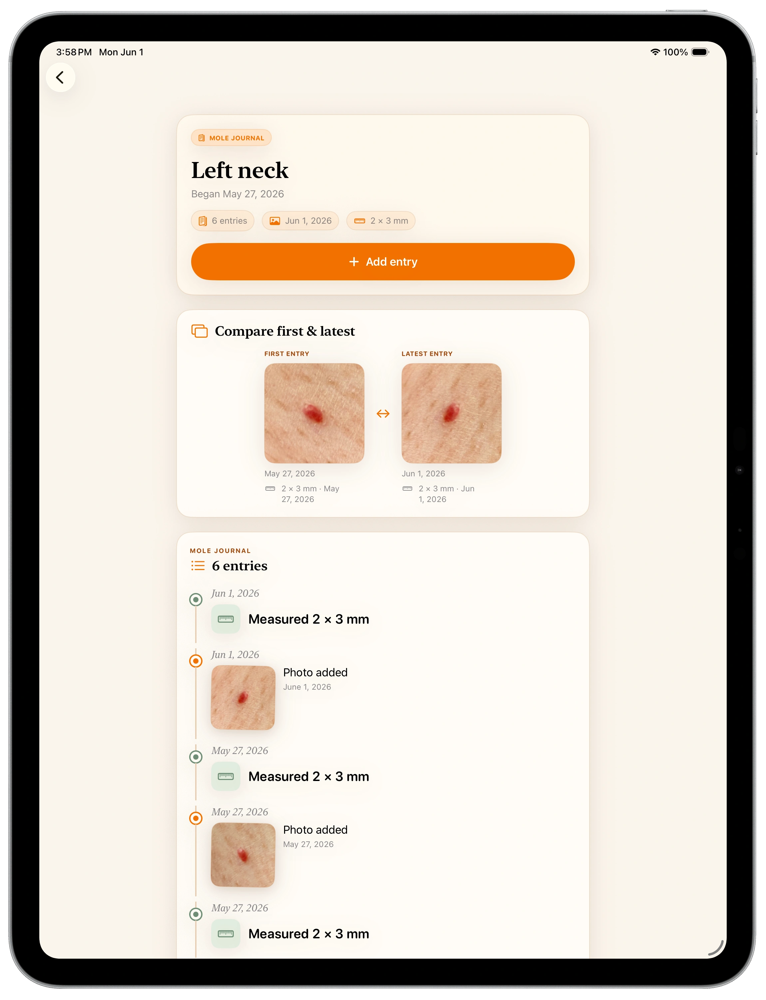
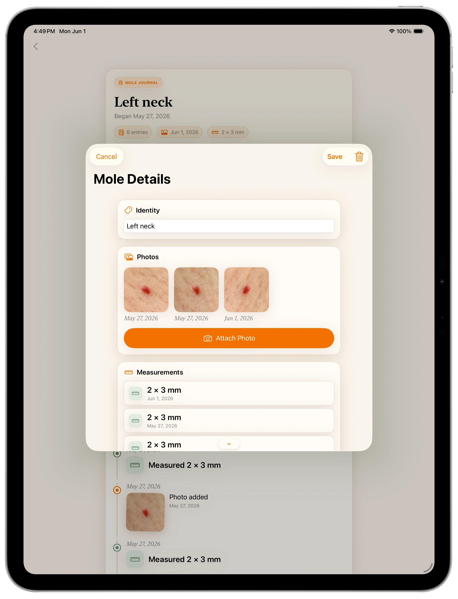
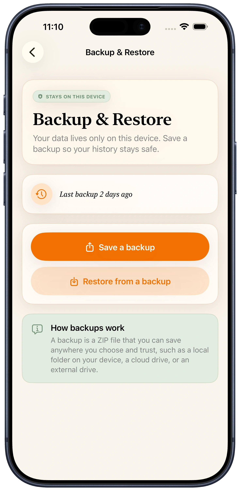

Is MoleJournal a medical app?
MoleJournal is for personal recordkeeping only. It is not a medical device and does not replace care from a dermatologist or other qualified clinician.
Private skin journal
A private mole journal for keeping dated photos, measurements, notes, and body locations organized on your own device.
Create profiles, place moles on a 3D body model, and keep each mole's record in a calm timeline that is easier to review over time.

MoleJournal is for personal recordkeeping only. It is not a medical device, does not diagnose skin cancer or any other condition, does not analyze photos, and does not replace professional medical care. Contact a dermatologist or other qualified clinician for medical advice.
Private journal
Instead of scattered camera-roll photos or handwritten notes, MoleJournal keeps profile details, mole locations, photos, measurements, and optional notes together.


3D body map
The 3D body map makes location recordkeeping more visual than a written description alone. Green markers show active mole records, and blue markers indicate biopsied records.
Dated timeline
Photos, measurements, and notes appear as dated entries, so past records stay connected to the right mole.


Add an entry
Add dated photos, record height and width, and keep optional notes or biopsy details in one structured record.
Backup & restore
Because records stay local, backups matter. MoleJournal includes export and restore tools so you can keep an extra copy somewhere you trust.
Your records live on your device, so keeping your own backup is the way to protect them if you replace or reset your device.

FAQ
MoleJournal is for personal recordkeeping only. It is not a medical device and does not replace care from a dermatologist or other qualified clinician.
Your profiles, mole records, measurements, notes, and photos are stored on your device. Orange Forge AI, LLC does not store your mole records or photos on its servers.
No. MoleJournal does not require an account or cloud profile.
Yes. MoleJournal lets you export a backup file that you control. You choose where to save it and whether to share it.
You can record mole locations, dated photos, measurements, notes, biopsy status, biopsy dates, and biopsy notes.
Contact a dermatologist or other qualified clinician for medical advice.
MoleJournal
Keep mole photos, measurements, notes, and body locations organized in one calm, on-device app. No account required.